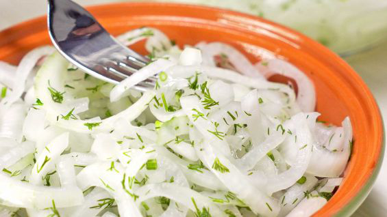

Маринованный лук к шашлыку

Ингредиенты:
- лук - 5-6 шт.
- укроп - по желанию
- вода - 0,8 литра
- сахар - 2 ст.ложки
- соль - 1/3 ст.ложки
- уксус 9% - 9 ст.ложек
- перец - по вкусу
Приготовление:
1. Режем лук и укроп
2. Добавляем сахар, соль, уксус, перец, воду, перемешиваем.
3. Маринуем 30 минут и сливаем воду.